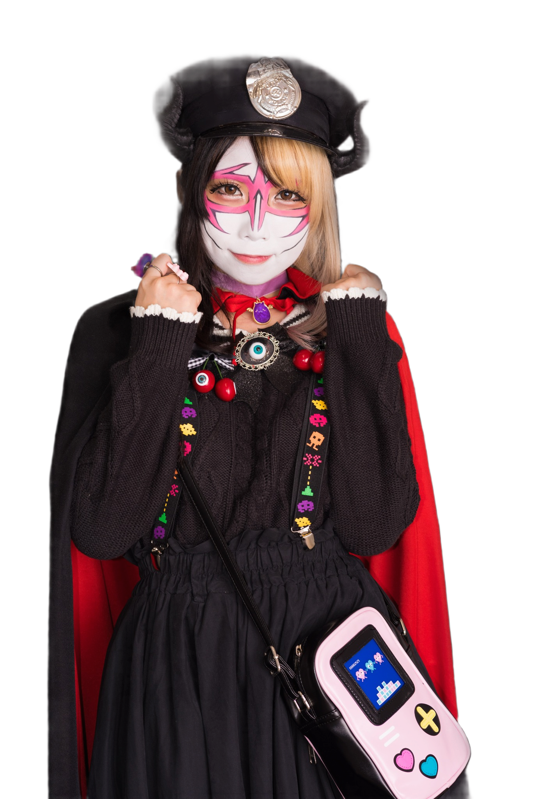
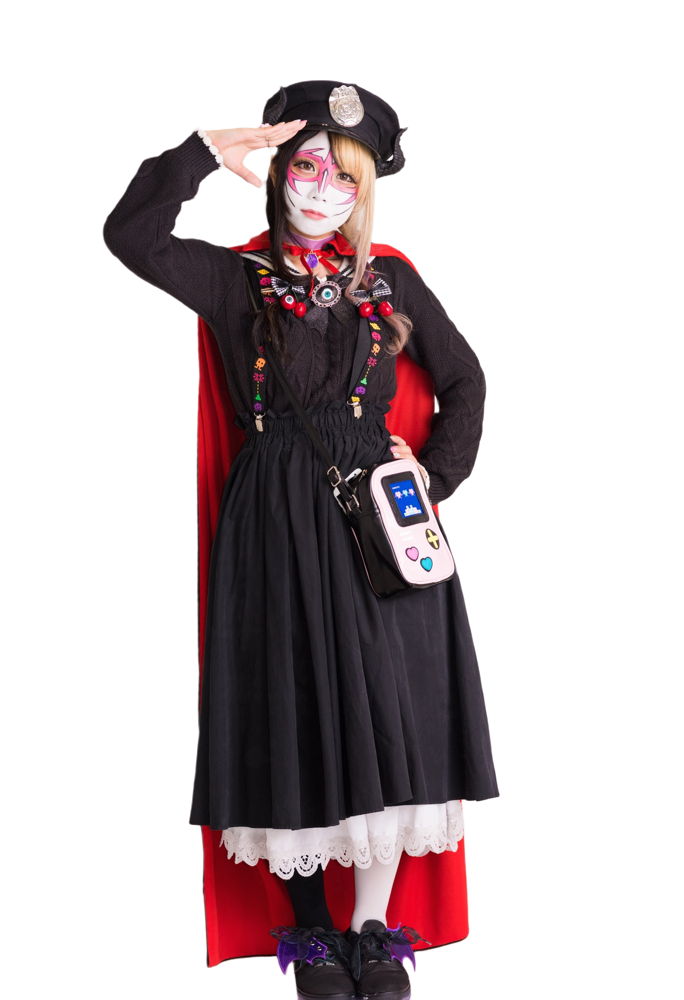
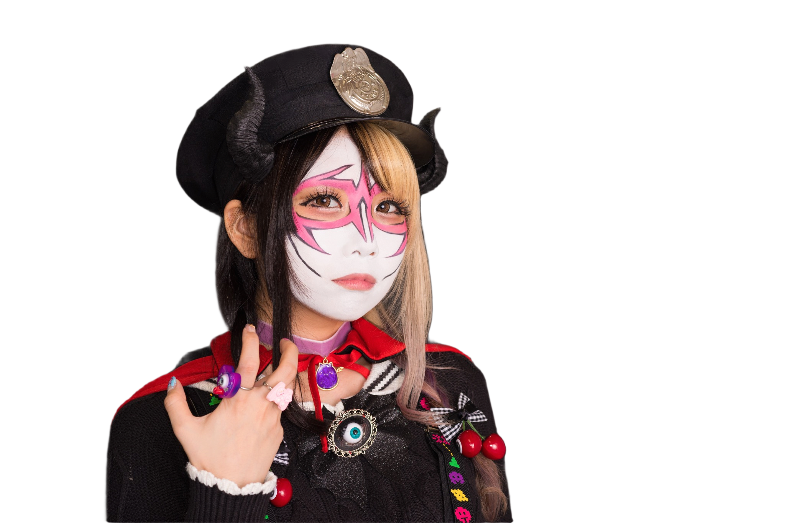

SEASON 1 ミリオンゴッド神堕とし編
悪魔が来たりて、 ヘヴィメダル
兎味ペロリナ vs ヨハネの黙示録 4騎士団
2025.5.10 — 6.14

SEASON 1 ミリオンゴッド神堕とし編
兎味ペロリナ vs ヨハネの黙示録 4騎士団
2025.5.10 — 6.14
ABOUT

悪魔のラスボス 兎味ペロリナ を、 ヨハネの黙示録の 4騎士団 が討つ——
悪魔のラスボス 兎味ペロリナを、 ヨハネの黙示録の 4騎士団が討つ――
各週ごとに騎士団が出陣し、全5章の戦いを経て
6月13日・14日の「最後の審判」で真の覇者が決まる。
TARGET MACHINE
4/20 導入開始
神は、再び降臨する。
圧倒的出玉性能で時代を築いた
「スマスロ ミリオンゴッド」が、
スマスロとして新たな進化を遂げて登場。
一撃性能はシリーズ随一。
純増スピード×上位ATの破壊力が、
かつてない"神の領域"へと導く。
HOST CHARACTER
サバトエンターテイメント主催者 / 悪魔のラスボス

サバトエンターテイメント主催のパチスロ取材キャラクター。
今回の企画では「悪魔のラスボス」として参加ホールの4騎士団に挑まれる存在。



SCHEDULE
The First Horsemen — WAVE 1
The Second Horsemen — WAVE 2
The Third Horsemen — WAVE 3
The Fourth Horsemen — WAVE 4
The Fifth Horsemen — WAVE 5
The Final Judgement — 覇者決定戦
RESULTS
各WAVEの結果記事はタグで自動表示されます
— 読み込み中 —
— 読み込み中 —
— 読み込み中 —
— 読み込み中 —
— 読み込み中 —
THE FINAL JUDGEMENT
各WAVEの頂点に立った強者たちが、最後の審判へ挑む